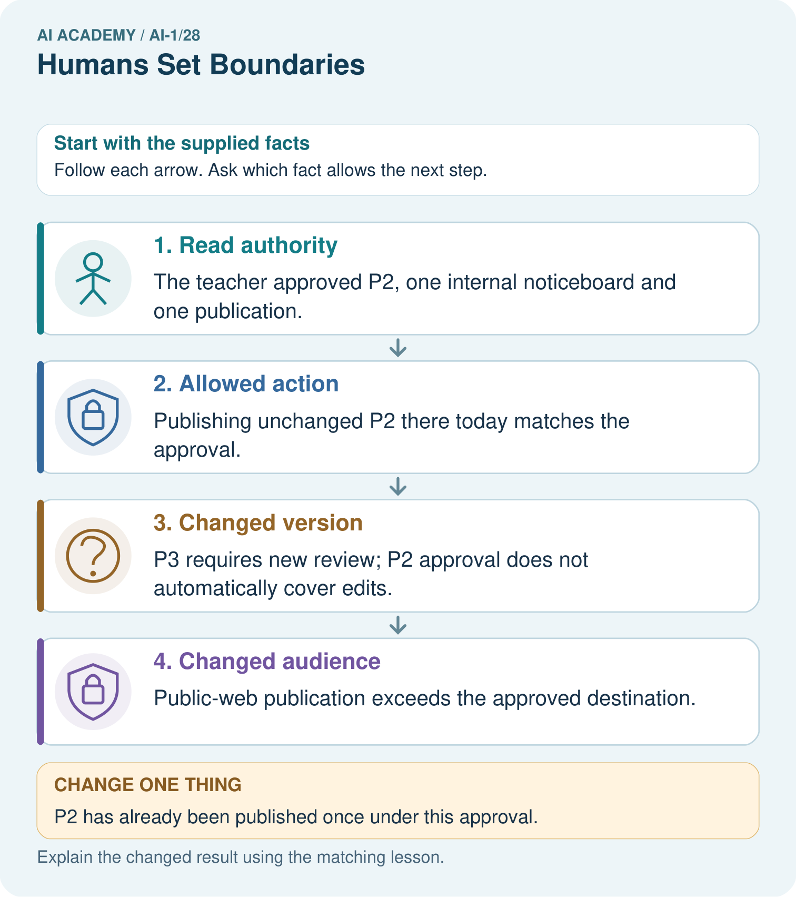
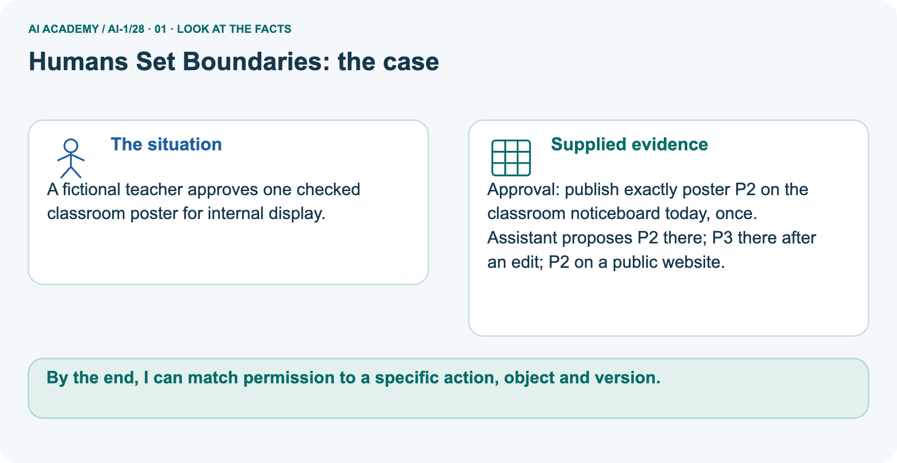
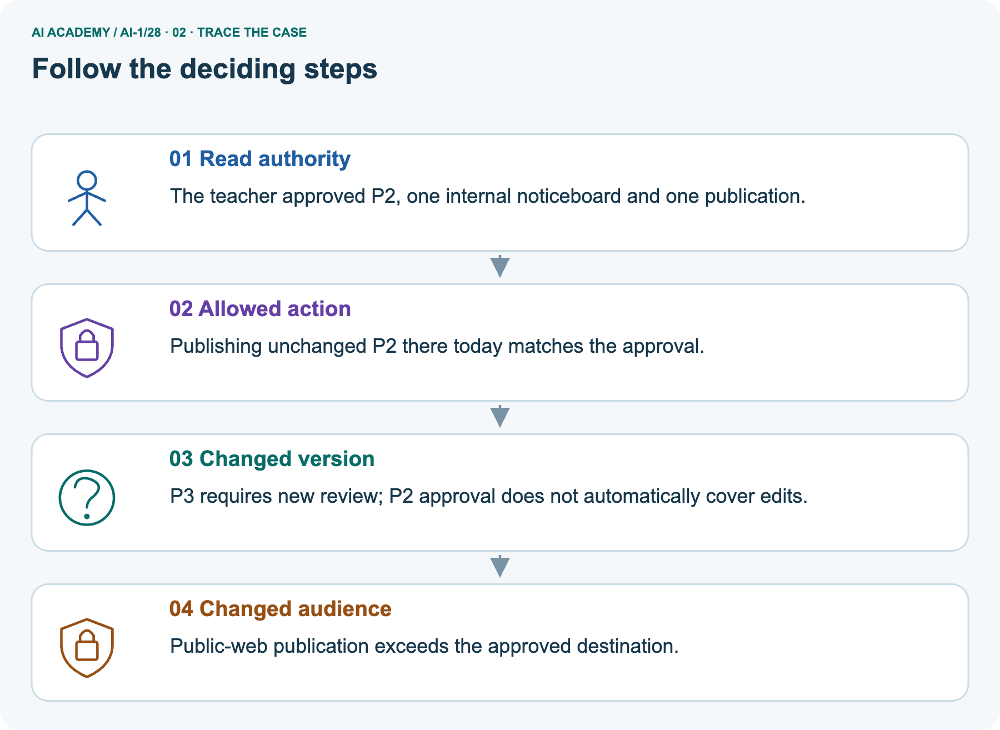
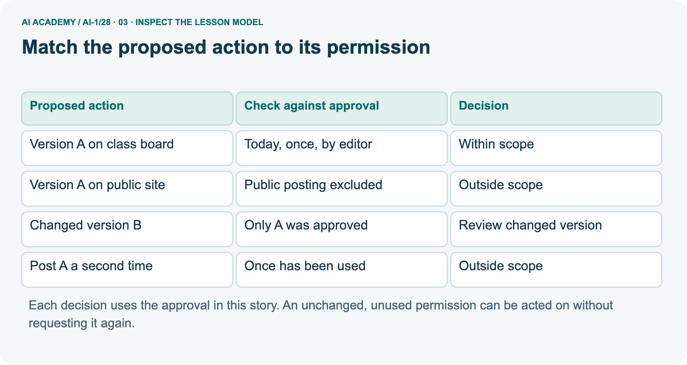
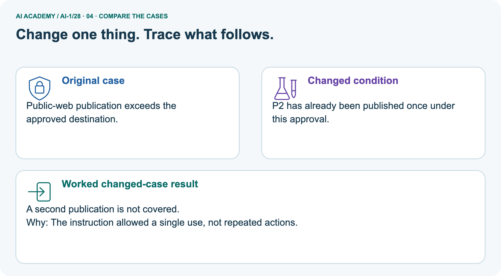
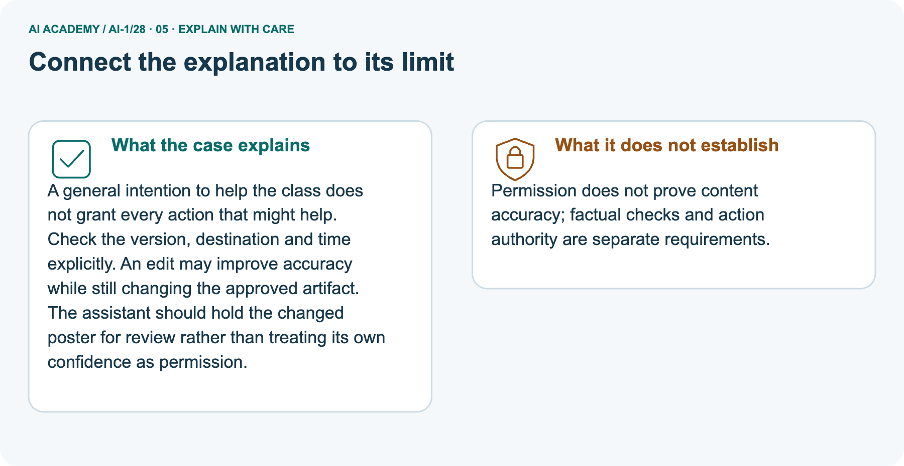
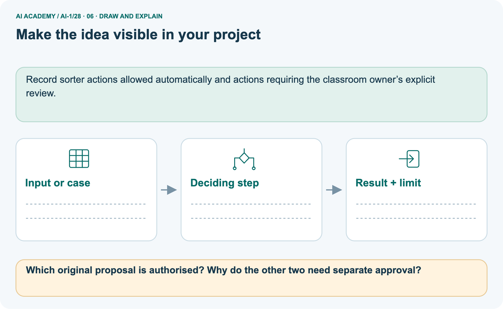

AI Academy · Level 1 · Grade 6 · Week 28 · Teacher guide
Humans Set Boundaries
Learn to understand, design, build, test and explain AI systems responsibly.
Project: Helpful Classroom Sorter
Teacher guide · 1 of 9
Humans Set Boundaries
Prepare Humans Set Boundaries: check the target, prerequisites, resources and adaptable teaching schedule.
Teach the learning cycle
Primary target: Distinguish a system’s capability, the correctness of its output and permission to take an action
| Session | Sequence and minutes | Resources |
|---|---|---|
| Session 1 · Understand · 45 min | 0–7: recall and prerequisite; 7–15: inspect the concrete case and predict; 15–30: teacher models the worked trace; 30–40: learners explain a step using the text and visual; 40–45: check the core idea. | Sections 1–6; record the brief recall in the workbook. |
| Session 2 · Practise · 45 min | 0–5: retrieve the procedure; 5–15: W2 completion practice; 15–23: explain and check with a partner; 23–30: each learner answers the misconception check; 30–40: targeted reteaching or a harder variation; 40–45: prepare the investigation. | Sections 7–10; use the matching workbook W2 and misconception check. |
| Session 3 · Investigate and transfer · 45 min | 0–5: retrieve the decision rule; 5–20: investigate or trace; 20–30: start the independent case; 30–38: connect the project; 38–43: act on feedback; 43–45: plan the return check. | Sections 9 and 11–14. Give extra time to finish the full task set; use Section 15 when the week includes a coding lab. |
This is a starting allocation of 135 minutes, not a validated duration. Preserve all named topics. Schedule extra time for connected examples, the full investigation, independent cases and project building.
Repeated copies of a case share one recorded attempt; they are not new evidence.
Retrieval answer guidance
Verify Important Outputs
Without opening the old lesson, explain one key idea from Verify Important Outputs. Give an example and a mistake that the idea helps you avoid.
Look for: Separate an answer into claims and connect each claim to relevant evidence
Reference example, not the only acceptable wording: A directly stated fact is four rolls, 2 m per roll or twelve 50 cm pieces.
A derived quantity is 8 m starting length, 6 m used or 2 m remaining, supported by the relevant calculation from R. R contains no enjoyment evidence, so citing it does not support everyone enjoying the activity.
Generate, Retrieve, or Calculate?
Without opening the old lesson, explain one key idea from Generate, Retrieve, or Calculate?. Give an example and a mistake that the idea helps you avoid.
Look for: Distinguish retrieving a record, calculating from inputs and generating wording
Reference example, not the only acceptable wording: Room: retrieval, checked against the right source N2 and event. Remaining places: calculation, checked as 6 × 4 − 3 = 21 with correct inputs.
Title: generation, checked for the requested style and unsupported factual details. An application can combine them; the labels describe operations rather than exclusive types of application.
Missing and Unbalanced Examples
Without opening the old lesson, explain one key idea from Missing and Unbalanced Examples. Give an example and a mistake that the idea helps you avoid.
Look for: Name the target collection, selection list and cases actually assessed
Reference example, not the only acceptable wording: The target is all 24 specified cards across four conditions. The sample is the 6 bright-circle cards. Dim circles, bright squares and dim squares are absent.
A frame containing only bright-circle IDs excludes every other condition, regardless of how randomly IDs are drawn from it.
Use the student module and workbook section with this exact week title. The worked case, independent question and answers below form one aligned lesson sequence.
What the learner must demonstrate
A classroom assistant may draft a reminder but cannot send messages. It displays a completed draft and waits. A student writes 'looks good' without a destination. Has a clear send authorisation been given?
Specify what is needed.
Concept to explain
People decide goals, permissions, review points, and consequences.
| Term | Meaning |
|---|---|
| boundary | limit on what a system may do |
| permission | authorized access or action |
| review gate | point requiring human approval |
| consequence | result experienced after a decision |
Prepare the class
Use the supplied scenario, student illustrations and blank paper. For numeric work, offer counters or a calculator after learners show the setup. Fictional records are supplied; personal data and paid accounts are unnecessary.
Alternative compact allocation
This compact option is not the full-week schedule. Use the main teaching cycle and allow extra sessions for the investigation, independent work and project.
Allow 80 minutes: recall 8; explanation 12; worked demonstration 15; guided practice 20; independent assessment 15; project and reflection 10. Extend the lab into a second session when needed.
Preparation for the connected explanation
Use the explicit rules of these fictional classroom and library scenarios. Keep capability, factual support and authority distinct.
Learners should proceed within an existing clear permission and pause only when the proposed action is outside it or a necessary condition is unresolved. All publication and replacement actions are represented on paper.
Readiness answer
No. The checks establish factual support, not who may publish the announcement, where, or which version has been approved.
Paper cards labelled A, B, L2 and L3
Destination cards for class board, public website, internal list and public catalogue
The two fictional approval statements printed from the lesson and W4
End goal for the pictorial case
By the end, I can match permission to a specific action, object and version.
This added worked case illustrates the week’s main idea. Retain all original and connected topics; schedule its practice within the teaching cycle.
Teacher guide · 2 of 9
Explain the mechanism
Model Humans Set Boundaries using the supplied case, labelled mechanism and reasoning. Make the scope of each conclusion explicit.
Follow the information instead of imagining magic inside the machine.
1. Input — information entering
INPUT human-defined goal, permissions, and system output
2. Process — the deciding step
PROCESS apply review and escalation gates
3. Output — the result
OUTPUT approved action, revision, or refusal
Key idea
CORE IDEA People decide goals, permissions, review points, and consequences.
How the mechanism works
UNDER THE HOOD Governance surrounds the model: people define scope, access, thresholds, logging, escalation, and accountability.
Human oversight is meaningful only when reviewers have authority, information, time, and a safe way to override.
Draw a fresh example with all three stages:
Every step connects a claim to observable evidence.
The case to investigate
CASE A classroom helper may suggest a bin, but people decide what data it may use, when an adult reviews, and what happens after a mistake.
Step 1
STEP 1 — OBSERVE human-defined goal, permissions, and system output
Step 2
STEP 2 — TRACE apply review and escalation gates
Step 3
STEP 3 — CONCLUDE approved action, revision, or refusal
Model answer
MODEL REASONING Mark where data enters, where the system predicts, where a person reviews, and who may act. Give reviewers the evidence and power to correct or stop the process.
High-consequence cases should not pass automatically.
A claim to avoid
DO NOT OVERCLAIM A human in the room is not meaningful oversight if the person cannot understand or change the outcome.
What new evidence could change this answer?
Concrete teaching case
The teaching case
An assistant may suggest object locations; a teacher must approve moving valuable equipment.
What may happen without approval?
Exact explanation to model
Why the result follows
It may suggest a location within its role. Moving equipment requires actual teacher approval.
Explain the added worked example
Explain the added worked example · 1
A tool might be able to publish a message even when its user is only allowed to prepare a draft. A message might also contain correct facts but still be intended for a private group.
Ask three separate questions: can the system do this, is the proposed result correct, and is this particular action allowed? Evidence for one question does not automatically answer the others.
Explain the added worked example · 2
Use this fictional paper exercise. A class is preparing an announcement about a model bridge exhibition.
Version A says “Model bridge exhibition, Thursday, Room 6.” The teacher has checked those facts and is responsible for the class noticeboard.
The teacher tells the class editor: “You may put exactly version A on our classroom noticeboard today, once. Do not post it online.” The editor has not yet posted it.
Explain the added worked example · 3
In the story, the editor’s tool has buttons for Save draft, Class noticeboard and Public website. Having a button shows a possible capability. It does not change the teacher’s stated permission.
In this lesson, represent actions with paper cards; do not send messages or change a real noticeboard or website.
Explain the added worked example · 4
An approval record should identify the decision maker, the person or system allowed to act, the action, its audience or destination, and any version, time or quantity limit. These details make a permission usable.
“Looks good” could mean the wording is clear; without context it may not mean “publish this publicly”. If the intended action is unclear, clarify that action with the person responsible.
Explain the added worked example · 5
Here, the teacher has already approved the editor’s one posting of A on the class board today. Once the editor verifies that these conditions still hold, repeatedly requesting the same permission adds no new information.
But a classmate saying “Post it everywhere” does not expand the teacher’s approval: the classmate has no authority over publication in this story.
Key terms
| Term | Meaning |
|---|---|
| Capability | What a person or system is able to do |
| Authority | Responsibility and power to make a specified decision |
| Permission | An allowed action within stated limits |
| Scope | The boundaries of what a permission covers |
| Approval record | A note of who approved which action and under what conditions |
Model the reasoning aloud
Use the complete worked example below before asking learners to complete W2. Reveal a small part, invite a prediction, then explain the deciding step.
These teacher notes contain solutions; do not reveal the independent case answer during modelling.
| Check | Question in the exhibition story | What it does not establish |
|---|---|---|
| Factual support | Do Thursday and Room 6 match the source? | Permission to publish anywhere |
| Scope of approval | Does this action match the teacher’s limits? | That every statement is correct |
| Available capability | Does the tool offer this action? | Authority to use that action |
Model the reasoning aloud · 6
Suppose a current room record changes the exhibition to Room 8. The editor makes version B with Room 8, which is now factually supported. The old approval explicitly covered exactly A.
The editor should hold publication and show B and the changed room record to the teacher. Publishing the now-outdated A just because it was approved would fail the factual check.
Model the reasoning aloud · 7
A useful review request makes the choice concrete: “The room record now says Room 8. Here is version B with only that change.
May the editor post B on the classroom board today, once?” A request to review a specific change is easier to assess than an unexplained “Is this okay?” The teacher can approve, decline or request another change before anything is posted.
| Thinking move | Teacher prompt |
|---|---|
| Plan | What is given? What is the question? Which procedure fits these facts? |
| Do | Point to each input and intermediate step in the worked trace. Name the rule that allows the next step. |
| Check | Does the output answer the question? Which assumption or limitation prevents a larger claim? |
Use the diagram and verbal explanation together. Ask learners to match a sentence to a specific visual step; do not assign learners fixed visual or auditory learning styles.
A pictorial worked case: Humans Set Boundaries
A fictional teacher approves one checked classroom poster for internal display.
The facts we will use
Supplied facts
Approval: publish exactly poster P2 on the classroom noticeboard today, once.
Supplied facts
Assistant proposes P2 there; P3 there after an edit; P2 on a public website.

Read the picture one step at a time
Why this result follows
Why the result follows
A general intention to help the class does not grant every action that might help. Check the version, destination and time explicitly. An edit may improve accuracy while still changing the approved artifact.
The assistant should hold the changed poster for review rather than treating its own confidence as permission.
What this example does not establish
Keep the stated limit
Permission does not prove content accuracy; factual checks and action authority are separate requirements.
Change one thing in the pictured case
Change one thing
Change: P2 has already been published once under this approval.
Predicted result
Prediction: A second publication is not covered.
Why the result follows
Reason: The instruction allowed a single use, not repeated actions.
Ask while showing the picture
Ask while showing the picture · 8
Cover the result. Ask learners to name the inputs and predict the next step. Uncover one step, connect the icon to the actual procedure, and explain its evidence. Then change the supplied condition and compare.
The picture is a representation; it does not document execution of a real AI model.
Teacher guide · 3 of 9
Demonstrate and guide practice
Demonstrate Humans Set Boundaries, reduce support deliberately and check individual reasoning before discussing answers.
Board sequence
1. Put the facts on the board
Write the given facts: An assistant may suggest object locations; a teacher must approve moving valuable equipment.
2. State the decision to explain
Write the question to explain: What may happen without approval?
3. Reveal the worked reasoning
Reveal after predictions: It may suggest a location within its role. Moving equipment requires actual teacher approval.
Hold back the independent task
Keep for an independent attempt: A sorter marks a child's notebook throw away. Who should decide whether it is discarded? Name a boundary the system should enforce.
Classroom dialogue
Ask the class
Ask: Which facts are given, and which would we have to assume? Learners mark relevant details before discussing answers.
Language to model
Say: Predict first. Show the rule, information path or calculation that would produce the result. A correct guess is not yet an explanation.
Reveal reasoning one step at a time. Explain why a tempting alternative fails. Write units and denominators for arithmetic, trace conditions for decisions, and identify supporting sources for claims.
In pairs, one learner solves while the other checks evidence; exchange roles. Remove the worked answer before independent assessment.
Model these guided questions
The editor’s first unchanged A posting on the class board today is allowed. Public posting is excluded. A classmate is not the allowed editor. A second posting exceeds once.
Correct facts do not expand actor, audience or quantity limits. Exit: no identical approval is needed again if B remains checked, the actor and destination match, it is still today and the one replacement remains unused.
Public posting, a different version, actor or extra replacement is not covered.
Case-specific teaching sequence
| Stage | Teacher action |
|---|---|
| Session 1 start 0 to 7 minutes | Retrieve why a factual check does not establish publication permission. |
| 7 to 20 minutes | Read the exhibition scenario and identify capability, correctness and authority. Complete W1. |
| 20 to 33 minutes | Trace the permission diagram and record all six limits in W2. |
| 33 to 45 minutes | Introduce the changed room, complete W3 and write a concrete review request. |
| Session 2 start 0 to 8 minutes | Retrieve when an unchanged permission is sufficient. |
| 8 to 23 minutes | Complete the guided decisions using paper action cards and the actual approval record. |
| 23 to 38 minutes | Collect W4 independently; require a decision and the relevant limit for every proposal. |
| 38 to 45 minutes | Complete W5 and the exit check; distinguish a prepared action from a confirmed result. |
Reduce help deliberately
Completion practice
Completion task: List the decision maker, allowed actor, version, destination, timing and number of postings in the original exhibition approval.
Before any posting and with no changes to the facts or permission, explain whether the editor can carry out that exact action without asking again.
Reasoning to listen for
Teacher check: Teacher; class editor; exactly A; classroom noticeboard; today; once. Yes, after confirming those conditions still hold and the one posting has not been used.
The explicit unchanged permission already covers the action.
Start by identifying the given inputs together. Leave the intermediate steps blank. If needed, model one step, then withdraw that help on the next step. Move to a full trace only when the partial trace is understood.
For partners, alternate explainer and checker; collect a response from every learner before discussion.
Individual reasoning check
Use the worked case for Human authority and permission. Proposed explanation: “A working button grants permission”. Decide whether this explanation is supported.
Point to the step or supplied fact that decides; explain your repair if needed.
Expected repair
Expected correction: Capability does not establish who may use it or for what purpose.
Collect explanations, not only yes/no votes. If a misunderstanding is common, re-model the relevant step for the class.
If it affects a few learners, give a short targeted group explanation while others solve a more demanding variation.
Pictorial practice question
Which original proposal is authorised? Why do the other two need separate approval?
Reasoned teacher answer
Only unchanged P2 on the specified noticeboard today, once. P3 changes version; public posting changes audience.
Changed-case reasoning: A second publication is not covered. The instruction allowed a single use, not repeated actions.
Collect each learner’s explanation before discussion. Use the first missing connection between input, deciding step and result to choose support. This question is worked-case practice, not fresh mastery evidence.
Teacher guide · 4 of 9
Run the weekly evidence lab
Run the Humans Set Boundaries investigation and use the first unsupported step to choose a teaching response.
Predict first, test honestly, and explain what the evidence means.
1. Predict
State your prediction before the result is known.
2. Investigate
Complete the task: Add adult-review gates to a classroom helper.
3. Compare cases
Keep a normal case and an edge case clearly separated.
4. Record honestly
Record what happened—even when it does not match your prediction.
5. Explain and plan the next test
Explain the result, one limitation, and the next useful test.
Use a fresh case after support
INDEPENDENCE After support is removed, repeat the proof with a fresh case.
Make the lab runnable
Use the concrete case as the shared normal case and the independent question as a second case. Each pair creates a boundary or missing-information case and predicts its result before testing.
Keep the expected result separate from an observed mistake.
| Record | What to capture |
|---|---|
| Input or evidence | Exact data, instruction or claim |
| Expected result | Answer or safe fallback declared before the run |
| Observed result | Actual result, including errors |
| Explanation | Rule, calculation or evidence explaining the outcome |
| Next test | One justified change and a new prediction |
Diagnose and reteach
Find the unsupported claim
CLAIM TO REPAIR Giving a system a task transfers all responsibility to it.
For guessing, return to given facts and request a trace. For vocabulary without application, use one example and one non-example. For arithmetic errors, check the setup before the calculation.
Finish with a different uncoached case before recording mastery.
Address these additional misconceptions
A working button grants permission: Capability does not establish who may use it or for what purpose.
A correct answer can always be published: Check the approved actor, action and audience as well as accuracy.
Always ask again even when nothing changed: Use an explicit, still-valid permission within its stated limits.
The draft can announce its own approval: Read the actual decision maker’s approval record.
Match the support to the first error
| What the response shows | Next teaching action |
|---|---|
| Missing or misread facts | Read the case aloud, mark supplied versus unknown facts, and let the learner restate it. |
| Wrong procedure | Return to the deciding step in the worked case. Contrast it with the proposed incorrect explanation. |
| Arithmetic or implementation error | Trace intermediate values or lines; preserve the first mismatch and retry that step. |
| Correct result without a reason | Ask for a trace and a changed case before marking independent understanding. |
| An unsupported wider claim | Ask which supplied evidence supports the claim and which further observation would be needed. |
Offer an oral explanation, drawing, enlarged visual or fewer examples when that removes a reading/writing barrier. Keep the same reasoning goal.
Stretch secure learners by changing a boundary or assumption and asking them to defend the effect, not simply by assigning more of the same questions.
Teacher guide · 5 of 9
Assess and explain the answers
Use the Humans Set Boundaries questions, teacher keys and criteria after the relevant attempts. Previously discussed cases are practice; protect the separately selected independent task.
Worked case answer
Teacher key · Worked case answer
It may suggest a location within its role. Moving equipment requires actual teacher approval.
Independent question
Independent question · withhold the key
A sorter marks a child's notebook throw away. Who should decide whether it is discarded? Name a boundary the system should enforce.
Expected independent answer
Teacher key · Expected independent answer
A responsible person must review before discarding it. The sorter may suggest a category but should not destroy belongings automatically.
What counts as evidence
| Criterion | 0 points | 1 point | 2 points |
|---|---|---|---|
| Result | Incorrect or absent | Partly correct | Correct with necessary conditions |
| Reasoning | No supporting trace | Some steps | Clear mechanism, calculation or source support |
| Limit | Overclaims certainty | Vague limitation | Relevant uncertainty or missing fact |
| Transfer | Copies without adapting | Adapts with prompts | Solves a changed case independently |
Use 6/8 as a classroom checkpoint, with 2 required for both Result and Reasoning. This is a proposed teaching rule, not a validated certification threshold.
Do not count a coached answer as independent mastery; correct unsafe or unsupported claims regardless of total.
Feedback
Ask the learner to find the evidence that challenges this claim: “Giving a system a task transfers all responsibility to it.” Keep the first attempt and an uncoached retry separate.
Original transfer answer
Teacher key · Original transfer answer
No clear send authorisation is established, and the assistant's current permission excludes sending. A teacher must explicitly authorise the send action, content and destination through an allowed workflow.
Until then the draft remains a draft; a timeout is not permission.
Explanations for the additional workbook examples
W1 Separate three kinds of evidence
Workbook question · W1
A tool offers a Public website button. The exhibition facts in A have been verified. The teacher’s approval covers the classroom board only. State what the button, the fact check and the approval each establish.
Decide whether the editor may publish A publicly.
Teacher reasoning · W1
The button establishes a capability. The fact check establishes factual support for A at that time. The approval permits the specified classroom-board action within its limits.
Public posting is outside that permission even though the button exists and A is factually checked.
W2 Read an approval without enlarging it
Workbook question · W2
List the decision maker, allowed actor, version, destination, timing and number of postings in the original exhibition approval.
Before any posting and with no changes to the facts or permission, explain whether the editor can carry out that exact action without asking again.
Teacher reasoning · W2
Teacher; class editor; exactly A; classroom noticeboard; today; once. Yes, after confirming those conditions still hold and the one posting has not been used. The explicit unchanged permission already covers the action.
W3 Prepare a reviewable change
Workbook question · W3
The room changes to Room 8 and the editor creates B. Explain why publishing old A and publishing unapproved B each fail a different check.
Write a specific request for the teacher to review B, keeping the original destination and one-posting limit.
Teacher reasoning · W3
A now fails factual support because the room has changed. B has the supported room but is outside the exact-A approval. Show B and the updated source; ask whether the editor may post B on the classroom board today once.
Do not infer public permission or approval from B’s correctness.
W4 Transfer the permission check to a new case
Workbook question · W4
In a fictional library, the librarian controls the internal shelf list. The librarian tells assistant Jo: “Replace the internal list with checked version L2 on Friday, once.
Do not change the public catalogue.” It is Friday, L2 remains checked, and no replacement has occurred. A tool offers both destinations.
Assess these proposals separately: Jo replaces the internal list with L2; Jo updates the public catalogue with L2; visitor Sam replaces the internal list with L2; Jo replaces the internal list with a changed L3.
Identify the approval detail that settles each case.
Teacher reasoning · W4
Jo using L2 internally on Friday once is within scope and needs no duplicate approval. The public catalogue is explicitly excluded. Sam is not the approved actor. L3 is not the approved version.
These last three actions are not covered; hold them and refer any proposed change to the librarian rather than treating available buttons or correct text as permission.
W5 Avoid an accidental second action
Workbook question · W5
Jo attempts the permitted internal replacement, but the tool’s response does not show whether it succeeded. Explain why immediately repeating it is a poor choice under a once-only approval. What should Jo check?
If Jo discovers a public change occurred instead, describe the first recovery steps.
Teacher reasoning · W5
A repeat might perform the limited action a second time. Inspect the internal list or its change record, or have the librarian confirm the outcome, before retrying.
If the public catalogue changed, stop further changes, tell the librarian what happened and follow their directions for correction. Do not claim that reversal proves nobody saw the public change.
Assess independent transfer
Independent question · withhold the key
Selected case: In a fictional library, the librarian controls the internal shelf list. The librarian tells assistant Jo: “Replace the internal list with checked version L2 on Friday, once.
Do not change the public catalogue.” It is Friday, L2 remains checked, and no replacement has occurred. A tool offers both destinations.
Assess these proposals separately: Jo replaces the internal list with L2; Jo updates the public catalogue with L2; visitor Sam replaces the internal list with L2; Jo replaces the internal list with a changed L3.
Identify the approval detail that settles each case.
Selected case answer
Teacher key · Selected case answer
Jo using L2 internally on Friday once is within scope and needs no duplicate approval. The public catalogue is explicitly excluded. Sam is not the approved actor. L3 is not the approved version.
These last three actions are not covered; hold them and refer any proposed change to the librarian rather than treating available buttons or correct text as permission.
| Dimension | Evidence required |
|---|---|
| Explanation | Names the applicable idea or procedure and ties it to the supplied facts. |
| Trace and result | Preserves the given inputs and shows the relevant intermediate steps; distinguishes a prediction from an observed execution. |
| Limits | States the assumptions, missing evidence or conditions under which the result would change. |
Teacher key · Selected case answer
Record each dimension as not yet, with support, or independent. Accept a valid alternative procedure with a defensible trace.
Do not penalise an honestly recorded model failure if the learner correctly explains its evidence and limits.
Feedback that the learner uses
Name the earliest unsupported step and give one action to repair it. Have the learner make that repair now and explain why. Then assess the relevant skill on a fresh, fully specified case.
Confirm it was not previously practised with feedback; solve and check the new case before assigning it. A follow-up design prompt is a starting brief, not automatically an equivalent test.
Teacher guide · 6 of 9
Connect and extend learning
Connect Humans Set Boundaries to Helpful Classroom Sorter, adapt support and plan a later changed-case check.
Helpful Classroom Sorter
Complete the sorter's human-control map: permissions, review triggers, override, correction, and stop conditions.
Keep the decision, input, result, explanation and remaining limitation in the project evidence record. Retrieve this record next week rather than restarting the project.
Support and stretch
Use physical cards, spoken explanations and a three-stage drawing. Read aloud without giving the answer. Stretch: compare two mechanisms with the same visible output and explain what evidence distinguishes them.
Exit reflection
Ask for one decision the learner can now justify and one situation requiring more evidence or human review. Confidence ratings are separate from correct independent performance.
Bridge to the next week
Next: Week 29: Find a Real Problem. Retrieve today’s evidence and identify what carries forward and what is new.
Support and fresh reassessment
Provide a frame with Who approved, Who acts, What version, Where, When and How many. Keep the permission card visible while sorting proposals.
Extension: explain how an approval allowing a defined range of edits differs from an approval for one exact version, and give an edit inside and outside that range.
W4 requires one allowed action and three uncovered actions, justified by destination, actor and version respectively.
After support, give a new approval explicitly allowing Jo to replace either the internal list or the public catalogue with L2 on Friday, once total.
Ask whether a first public replacement is covered and whether a subsequent internal replacement is covered. Expected: first yes, subsequent no because the one total replacement has been used.
Week 29 uses these boundaries when choosing a problem worth solving for a small project.
Plan the delayed return
Suggested return points in this level: ai-1/29, ai-1/31, ai-1/34. Use actual classroom dates, adjusting for holidays and gaps. One, three and six teaching weeks are scheduling choices, not a claimed optimal spacing.
At a delayed check, ask for the idea from memory and a changed application. Compare with the earlier independent response and record support used.
For a new level, revisit the previous capstone before checking the new prerequisites.
| Record | Teacher evidence |
|---|---|
| Learner code and date | |
| Concept and case used; prior exposure | |
| Explanation / trace / limits | |
| Support and first repair | |
| Changed case and delayed outcome | |
| Next teaching action |
Use the evidence to choose reteaching or the next step. A completed page, confidence rating or attractive project does not by itself demonstrate understanding.
Project evidence from this case
Record sorter actions allowed automatically and actions requiring the classroom owner’s explicit review.
Teacher guide · 7 of 9
Prepare, teach and assess
Use this preparation summary alongside the detailed Humans Set Boundaries lesson; it is a checklist rather than a replacement for the full sequence.
Teaching target
Teaching target: Distinguish a system’s capability, the correctness of its output and permission to take an action
Prepare the labelled worked-case picture, the matching workbook, fictional input cards and a place for individual responses. No paid AI account is required for the paper reasoning activities.
| Session | Plan | Resources |
|---|---|---|
| Session 1 · Understand · 45 min | 0–7: recall and prerequisite; 7–15: inspect the concrete case and predict; 15–30: teacher models the worked trace; 30–40: learners explain a step using the text and visual; 40–45: check the core idea. | Sections 1–6; record the brief recall in the workbook. |
| Session 2 · Practise · 45 min | 0–5: retrieve the procedure; 5–15: W2 completion practice; 15–23: explain and check with a partner; 23–30: each learner answers the misconception check; 30–40: targeted reteaching or a harder variation; 40–45: prepare the investigation. | Sections 7–10; use the matching workbook W2 and misconception check. |
| Session 3 · Investigate and transfer · 45 min | 0–5: retrieve the decision rule; 5–20: investigate or trace; 20–30: start the independent case; 30–38: connect the project; 38–43: act on feedback; 43–45: plan the return check. | Sections 9 and 11–14. Give extra time to finish the full task set; use Section 15 when the week includes a coding lab. |
Before class, solve the supported practice: List the decision maker, allowed actor, version, destination, timing and number of postings in the original exhibition approval.
Before any posting and with no changes to the facts or permission, explain whether the editor can carry out that exact action without asking again.
Supported practice answer
Reasoned practice answer: Teacher; class editor; exactly A; classroom noticeboard; today; once. Yes, after confirming those conditions still hold and the one posting has not been used.
The explicit unchanged permission already covers the action.
Check every learner before discussion: Use the worked case for Human authority and permission. Proposed explanation: “A working button grants permission”. Decide whether this explanation is supported.
Point to the step or supplied fact that decides; explain your repair if needed.
Repair the misconception
Misconception repair: Capability does not establish who may use it or for what purpose.
Support without giving away the answer
Support: read the exact case aloud, enlarge the labelled picture, supply input cards and model only the first deciding step. Accept a spoken explanation or drawing; retain the reasoning goal.
Extend the reasoning
Extension: P2 has already been published once under this approval. Require a prediction and a reason before comparing. Expected result: A second publication is not covered.
Reason: The instruction allowed a single use, not repeated actions.
Protect the independent attempt
Independent assessment: withhold the reserved answer until the learner has attempted the new case. Record support separately from correctness.
| Criterion | Not yet | With support | Independent |
|---|---|---|---|
| Explanation | Names an answer without a deciding fact | Uses a hint to link fact and decision | Explains the deciding fact in own words |
| Trace or test | Cannot connect input and result | Completes steps with prompts | Traces or tests a changed case accurately |
| Limits and revision | Claims more than evidence supports | Names a limit after a prompt | States a defensible limit and useful next test |
Project checkpoint
Project checkpoint: Prepare the demonstration. Gather reproducible instructions, evidence, access checks and remaining limitations.
Use the weekly teacher answer for topic-specific reasoning. A saved progress tick is an activity record; judge mastery from the learner’s explanation and evidence.
Teacher guide · 8 of 9
Use feedback, labs and repair paths
Use feedback, earlier review and portfolios purposefully. Apply the coding routine only when this lesson has an executable lab.
Use the two formative questions as supported practice, not as independent mastery scores. Discuss the deciding evidence rather than accepting a guessed selection.
The feedback comes from the reviewed public worked case. Do not reveal the separately reserved independent teacher answer until the learner has attempted that case.
For later coding lessons
This week has no code block. Use this routine when a later lesson includes an executable lab.
Ask students to predict before running code. Preserve errors and actual outputs; collect a changed test and an explanation. The branch-boundary and indexing lessons deliberately include failure cases.
Use the earlier worked-explanation links to address a specific missing building block, then return to the current question. Adapt this suggestion after observing the learner; it is not an automatic diagnosis.
Collect the completed-work portfolio as evidence. Record support separately from correctness, and assess explanation, trace/test and limitations. Progress ticks and quiz selections alone do not establish mastery.
Teacher guide · 9 of 9
Visual concept journey
Show one Humans Set Boundaries graphic at a time, request a prediction and discuss its trace before the independent assessment.
Use one picture at a time. Hide a worked result before asking for a prediction, then reveal it for feedback. These are supported teaching cases; retain the separate independent assessment for a fresh first attempt.
01. Humans Set Boundaries: the case

A fictional teacher approves one checked classroom poster for internal display. Supplied facts: Approval: publish exactly poster P2 on the classroom noticeboard today, once.
Assistant proposes P2 there; P3 there after an edit; P2 on a public website.
Point to the given fact that matters most. Explain why it matters.
Discuss while showing the picture
Teacher prompt: Point to the given fact that matters most. Explain why it matters. Ask learners to describe one label or arrow in ordinary words. Use the adjacent transcript if the image is difficult to see.
02. Follow the deciding steps

Read authority: The teacher approved P2, one internal noticeboard and one publication. → Allowed action: Publishing unchanged P2 there today matches the approval. → Changed version: P3 requires new review; P2 approval does not automatically cover edits. → Changed audience: Public-web publication exceeds the approved destination.
Point to each numbered stage and explain which recorded input it uses.
Discuss while showing the picture
Teacher prompt: Point to each numbered stage and explain which recorded input it uses. Ask learners to describe one label or arrow in ordinary words. Use the adjacent transcript if the image is difficult to see.
03. Match the proposed action to its permission

Match the proposed action to its permission. Version A on class board | Today, once, by editor | Within scope. Version A on public site | Public posting excluded | Outside scope.
Changed version B | Only A was approved | Review changed version. Post A a second time | Once has been used | Outside scope
Read the labels and values. Explain the relationship the model shows.
Discuss while showing the picture
Teacher prompt: Read the labels and values. Explain the relationship the model shows. Ask learners to describe one label or arrow in ordinary words. Use the adjacent transcript if the image is difficult to see.
04. Change one thing. Trace what follows.

Original case: Public-web publication exceeds the approved destination. Changed condition: P2 has already been published once under this approval. Expected result: A second publication is not covered.
Reason: The instruction allowed a single use, not repeated actions.
Predict before checking the worked changed-case result. Name what changed and what the supplied facts allow you to conclude.
Discuss while showing the picture
Teacher prompt: Predict before checking the worked changed-case result. Name what changed and what the supplied facts allow you to conclude. Ask learners to describe one label or arrow in ordinary words.
Use the adjacent transcript if the image is difficult to see. Changed-case reasoning: The instruction allowed a single use, not repeated actions.
05. Connect the explanation to its limit

A general intention to help the class does not grant every action that might help. Check the version, destination and time explicitly. An edit may improve accuracy while still changing the approved artifact.
The assistant should hold the changed poster for review rather than treating its own confidence as permission. Limit: Permission does not prove content accuracy; factual checks and action authority are separate requirements.
Explain the case, then point to a limit on the claim.
Discuss while showing the picture
Teacher prompt: Explain the case, then point to a limit on the claim. Ask learners to describe one label or arrow in ordinary words. Use the adjacent transcript if the image is difficult to see.
Keep the stated scope: Permission does not prove content accuracy; factual checks and action authority are separate requirements.
06. Make the idea visible in your project

Record sorter actions allowed automatically and actions requiring the classroom owner’s explicit review. Draw your input, deciding step, result and limit. Supported question: Which original proposal is authorised?
Why do the other two need separate approval?
Draw your project trace and justify the deciding step using evidence.
Discuss while showing the picture
Teacher prompt: Draw your project trace and justify the deciding step using evidence. Ask learners to describe one label or arrow in ordinary words. Use the adjacent transcript if the image is difficult to see.
Supported practice key: Only unchanged P2 on the specified noticeboard today, once. P3 changes version; public posting changes audience.